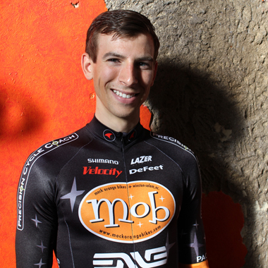
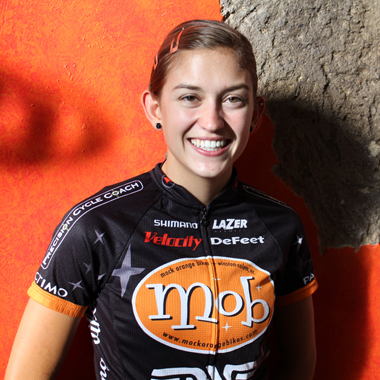
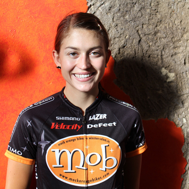
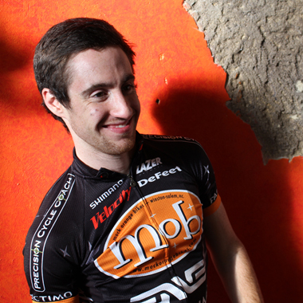
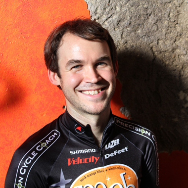
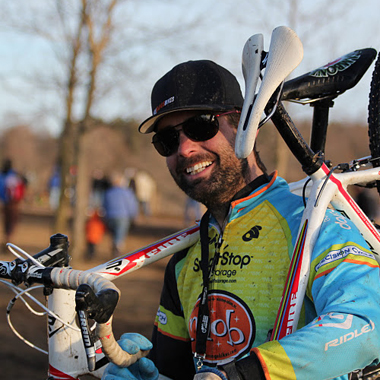

Sponsors Supporting them, supports us


Interested in becoming a sponsor? Get in touch!
Did you know? A portion of every purchase of a Ridley bike from Mock Orange Bikes goes to support our team!
About Why we do what we do
Team member Patrick Beeson racing in Hendersonville, NC in 2012.
We're a Winston-Salem, NC based professional cyclocross team, owned and operated by Mock Orange Bikes.
Our primary objective for the 2013-2014 season is to continue to develop and support some of the top young cyclocross racers in North Carolina. Our other objectives include:
- Provide value to our sponsors by representing them in a professional manner to add value to their brand.
- Remain a unique, exciting and eclectic feature in the racing community.
- Continue to create and expand our brand awareness through social media and traditional media coverage.
- Win the men’s and women’s elite divisions in the North Carolina state cyclocross series.
- Podiums at regional and national UCI races, including the national championships in Boulder, CO.
- Podium at the national collegiate cyclocross championships.
- Contribute positively to regional community.
Team The folks that make it happen

Kerry Werner
- Home
- Banner Elk, NC
- Age
- 22
- Racing category
- Elite Men
- 2012-2013 highlights
- 1st New York Super Cross Cup Weekend, 1st North Carolina Gran Prix, 5th Chicago cyclocross Cup New Year’s Resolution, 6th U23 Nationals, 1st cyclocross Collegiate D1 Nationals
- Social
- 2013-2014 results
- View on Google Drive

Katherine Shields
- Home
- Banner Elk, NC
- Age
- 20
- Racing category
- Elite Women
- 2012-2013 highlights
- 4th U23 USA National Championships, 4th NCCX Series Final, 3rd Supercross Cup Weekend, 4th NCCX State Championships, 2nd Crossroads Grand Prix, 1st MSG No. 5
- Social
- 2013-2014 results
- View on Google Drive

Emily Shields
- Home
- Banner Elk, NC
- Age
- 20
- Racing category
- Elite Women
- 2012-2013 highlights
- 3rd U23 USA National Championships, 3rd Chicago cyclocross Cup New Year’s Resolution, 3rd North Carolina Gran Prix, 2nd NC State Championships, 1st Salisbury cyclocross
- Social
- 2013-2014 results
- View on Google Drive

Alex Ryan
- Home
- Clemmons, NC
- Age
- 25
- Racing category
- Elite Men
- 2012-2013 highlights
- 2nd SECCA No. 1, 1st BHB CX No.1, 1st Asheville CX No. 1, 1st SECCA No. 2, 1st Cross and Waffles, 4th NCCX No. 1, 5th NCCX Series Overall (2011-2012)
- Social
- 2013-2014 results
- View on Google Drive

Patrick Beeson
- Home
- Winston-Salem, NC
- Age
- 33
- Racing category
- Elite Men
- 2012-2013 highlights
- 3rd overall NCCX series, 4th NCCX Series Final, 3rd NCCX Celtic Cross, 4th NCCX Five County Cross, 6th NC State Championships, 4th NCCX Durham, 4th Wilkesboro CX
- Social
- 2013-2014 results
- View on Google Drive

Zach Lail
- Home
- Winston-Salem, NC
- Age
- 36
- Role
- Director, mechanic
Schedule Where you'll find us this season
| Date | Race | Location | Results |
|---|---|---|---|
| Sept. 5, 12, 19, 26 | SECCA cyclocross training series | Winston-Salem, NC | View on Google Drive |
| Sept. 11, 18, 25/Oct. 2, 9, 16 | Countdown to the Throwdown | Boone, NC | View on Google Drive |
| Sept. 7-8 | Nittany Lion Cross | Breiningsville, PA | View on Google Drive |
| Sept. 14-15 | Green Mountain cyclocross Weekend | Williston, VT | View on Google Drive |
| Sept. 18 | Crossvegas | Las Vegas, NV | View on Google Drive |
| Sept. 21-22 | Charm City Cross | Baltimore, MA | View on Google Drive |
| Oct. 5 | Five County Cross | Zebulon, NC | View on Google Drive |
| Oct. 6 | Durham Cycles Cross | Durham, NC | View on Google Drive |
| Oct. 12 | MSG Cross No. 5 | Elizabethton, TN | View on Google Drive |
| Oct. 13 | Asheville CX Series No. 3 | Asheville, NC | View on Google Drive |
| Oct. 19 | NCCX No. 1 | Charlotte, NC | View on Google Drive |
| Oct. 20 | NCCX No. 2 | Raleigh, NC | View on Google Drive |
| Oct. 27 | NCCX No. 3 | Winston-Salem, NC | View on Google Drive |
| Nov. 1-3 | Cincy3 | Various, OH/KY | View on Google Drive |
| Nov. 3 | MSG No. 6 | Boone, NC | View on Google Drive |
| Nov. 3 | NCCX No. 4 | Boone, NC | View on Google Drive |
| Nov. 9-10 | USGP of cyclocross Derby City Cup | Louisville, KY | View on Google Drive |
| Nov. 9 | FSVX Fair Hill Cross - MAC #8 | Elkton, MD | View on Google Drive |
| Nov. 10 | HPCX | Jamesburg, NJ | View on Google Drive |
| Nov. 10 | NCCX No. 5 | Durham, NC | View on Google Drive |
| Nov. 16 | NCCX No. 6 (NC state championship) | Southern Pines, NC | View on Google Drive |
| Nov. 17 | NCCX No. 7 | Southern Pines, NC | View on Google Drive |
| Nov. 23 | Super Cross Cup Day 1 | East Meadow, NY | View on Google Drive |
| Nov. 24 | Super Cross Cup Day 2 | East Meadow, NY | View on Google Drive |
| Nov. 24 | NCCX No. 8 | Wilkesboro, NC | View on Google Drive |
| Dec. 8 | NCCX No. 9 | Salisbury, NC | View on Google Drive |
| Dec. 14-15 | North Carolina Gran Prix (NCCX Nos. 10, 11) | Hendersonville, NC | View on Google Drive |
| Jan. 4 | NCCX No. 12 | Winston-Salem, NC | View on Google Drive |
| Jan. 5 | NCCX No. 13 | Greensboro, NC | View on Google Drive |
| Jan. 5 | Kingsport cyclocross Cup | Kingsport, TN | View on Google Drive |
| Jan. 11-12 | USA National Championships | Boulder, CO | View on Google Drive |
| Jan. 18 | NCCX No. 14 | Asheville, NC | View on Google Drive |
| Jan. 19 | NCCX No. 15 | Asheville, NC | View on Google Drive |
More races will be added as schedules are released
Contact Reach out and...'like' us
Please reach out to us on social media by clicking the icons below. You can reach Team Manager Zach Lail directly at zach@mockorangecross.com.